Before the war, there was a choice.
An epic of duty, kinship, and the price of dharma.
The Beginning
From a single royal line came two brothers: Dhritarashtra, born without sight, and Pandu, marked young by a curse.
Pandu's five sons — the Pandavas — grew up beside Dhritarashtra's hundred — the Kauravas. Cousins by blood. Rivals by birthright.
Those Who Shaped the War
Explore the champions, sovereigns, and divine architects of Kurukshetra.
-
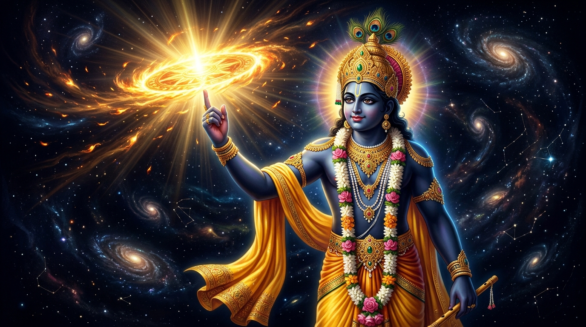
Divine • योगेश्वर 01Sri Krishna
The Divine Charioteer • YogeshwaraThe supreme cosmic consciousness who entered the mortal war without weapon in hand, guiding Arjuna across the abyss of despair to uphold cosmic Dharma.
Sacred LineageEighth avatar of Lord Vishnu, born to Devaki & Vasudeva in Mathura, raised in Vrindavan by Yashoda, sovereign ruler of the ocean citadel Dwaraka.
Divine ArsenalThe cosmic Sudarshana Chakra, Kaumodaki mace, Panchajanya conch, and all-pervading omniscient cosmic sight (Vishwaroopa).
Kurukshetra Turning PointSpoke the 700 verses of the Bhagavad Gita on Day 1; steered Arjuna's chariot; shielded the Pandavas through every catastrophic turning point.
\n\n
-
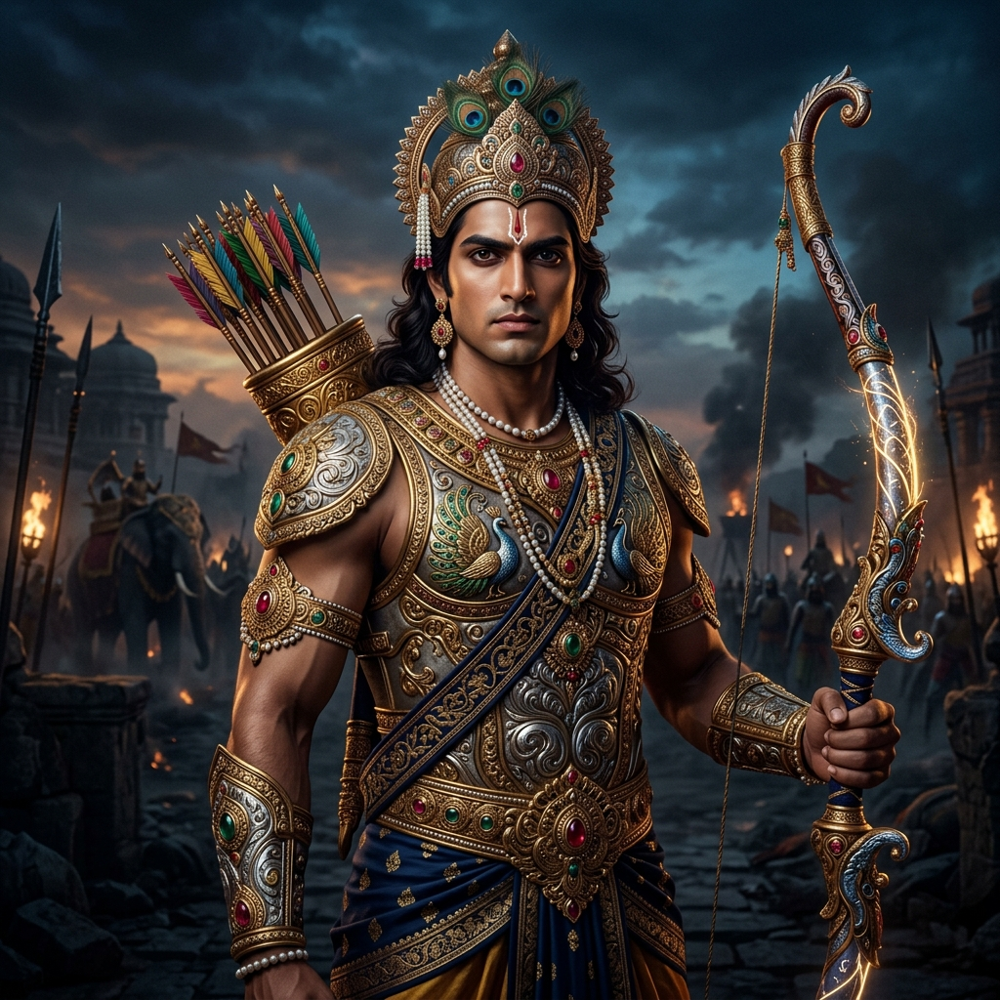
Pandava • महारथी 02Arjuna
The Incomparable Archer • SavyasachiForemost disciple of Drona and master of the Gandiva bow. When kinship paralyzed his resolve at Kurukshetra, Krishna's immortal revelation restored his purpose.
Sacred LineageThird Pandava, begotten by Queen Kunti from Indra (King of Devas); raised in Hastinapur; blessed by Lord Shiva with the celestial Pashupatastra.
Divine ArsenalThe celestial Gandiva bow, inexhaustible quivers of Agni, the white-horse chariot, and mastery of all four classes of divine astras.
Kurukshetra Turning PointBrought down the invincible Bhishma on Day 10 behind Shikhandi, avenged Abhimanyu by slaying Jayadratha, and eliminated Karna on Day 17.
\n\n
-
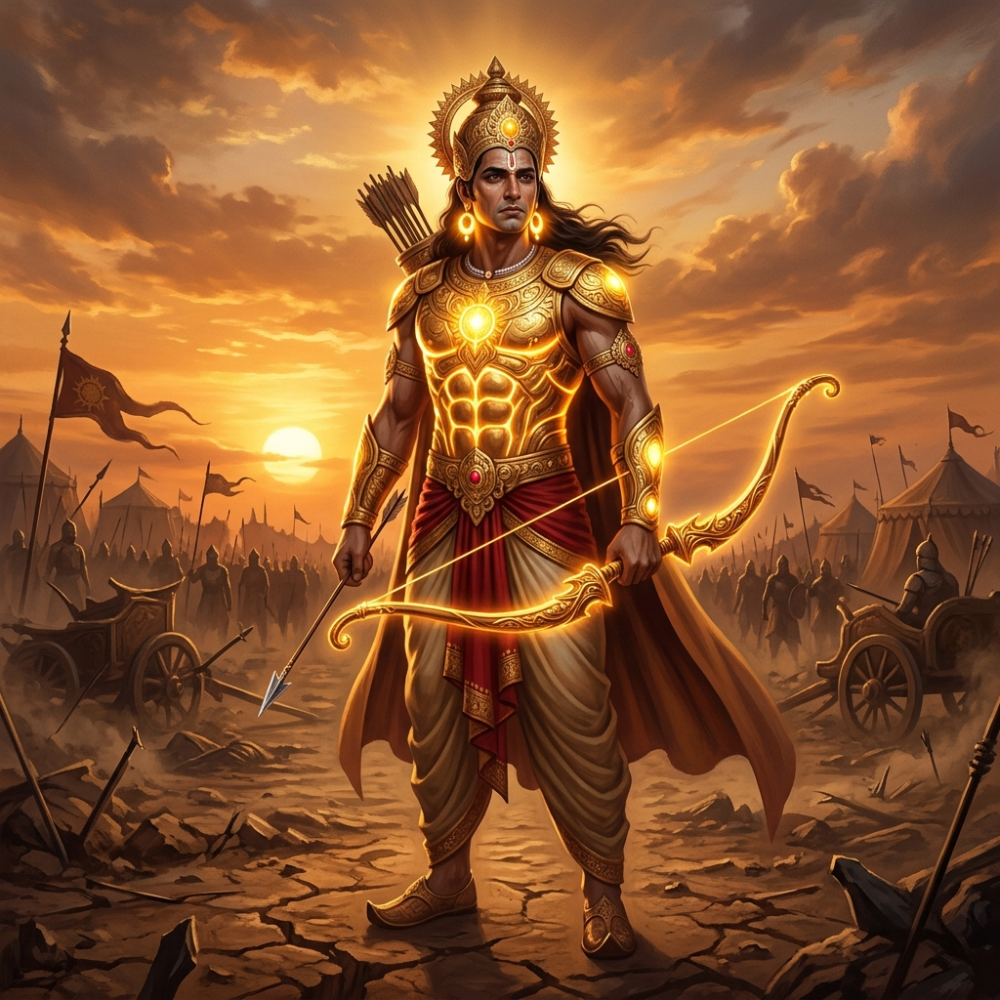
Kaurava Ally • दानवीर 03Karna
The Tragic Sun-Son • RadheyaBorn of the Sun God but raised in the dust of charioteers. Bound by undying gratitude to Duryodhana, he chose tragic honor over an easy throne.
Sacred LineageFirstborn son of Kunti and Surya (Sun God); set adrift in a basket, raised by charioteer Adhiratha; crowned King of Anga by Duryodhana.
Divine ArsenalThe sacred Vijaya bow of Parashurama, natural divine armor (Kavacha-Kundala), and the one-time infallible Vasavi Shakti dart.
Kurukshetra Turning PointSupreme Kaurava Commander on Days 16–17; spared four Pandava brothers honoring his vow to Kunti; felled by Arjuna as his chariot wheel sank into earth.
\n\n
-
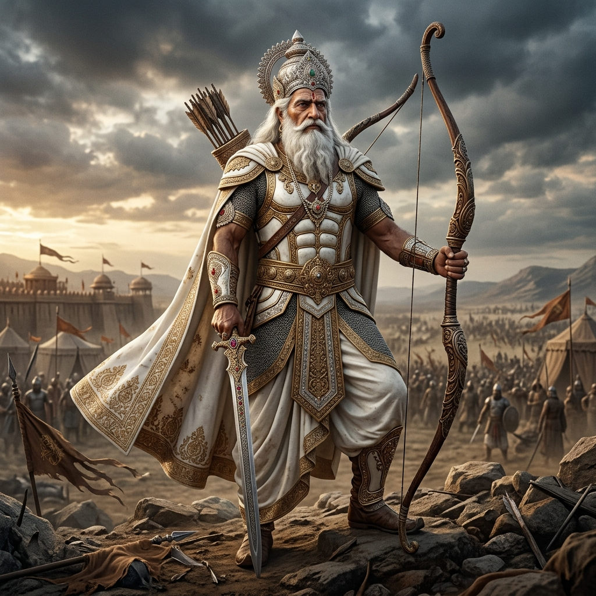
Patriarch • पितामह 04Bhishma
The Grand Patriarch • GangaputraThe unyielding pillar of Hastinapur who renounced his crown and took a terrifying vow of lifelong celibacy to honor his father's happiness.
Sacred LineageSon of King Shantanu and River Goddess Ganga; original name Devavrata; blessed with Iccha-Mrityu (death only by his own chosen will).
Divine ArsenalMastery of all celestial astras, unmatched archery prowess, and deep wisdom in statecraft, ethics, and Rajadharma.
Kurukshetra Turning PointSupreme Kaurava Commander for Days 1–10; devastated Pandava legions until pinned upon a bed of arrows by Arjuna, waiting until the northern solstice to depart.
\n\n
-
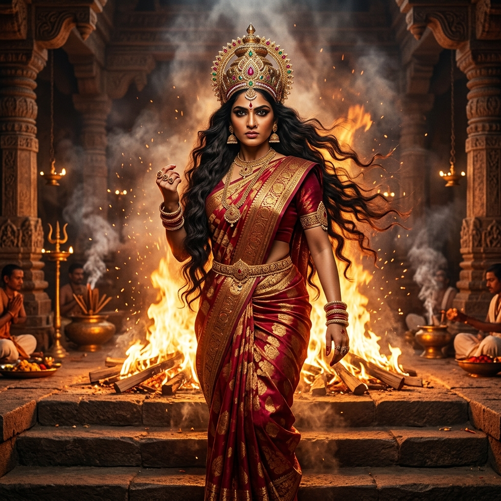
Pandava Queen • याज्ञसेनी 05Draupadi
The Fire-Born Empress • PanchaliEmerged from the roaring flames of a sacred sacrificial altar. Her humiliation in the royal assembly became the moral catalyst that tore an empire apart.
Sacred LineageBorn fully formed from the Putrakameshti Yajna of King Drupada of Panchala; sister of Dhrishtadyumna; empress to the five Pandavas.
Divine ArsenalInflexible moral conviction, divine spiritual protection directly granted by Krishna, and the fiery tears of unyielding justice.
Kurukshetra Turning PointRefused to tie her unbound hair for 13 years until washed in Dushasana's blood; her sacred vow was the relentless spiritual engine of the war.
\n\n
-
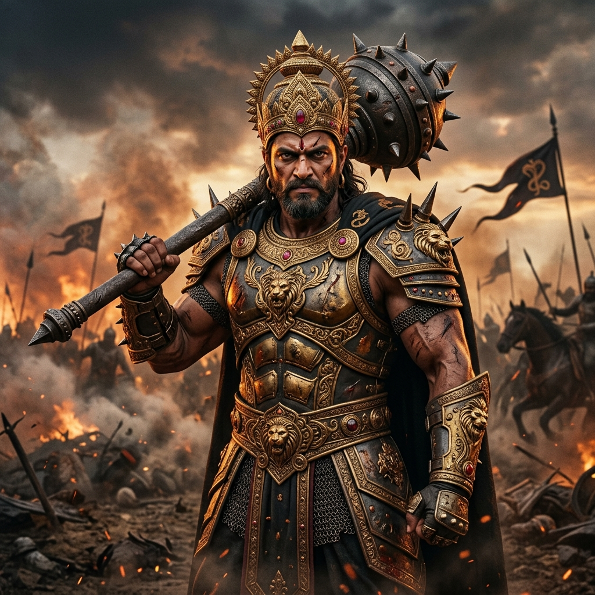
Kaurava Leader • अधिपति 06Duryodhana
The Unyielding Sovereign • SuyodhanaCrown prince of Hastinapur whose absolute conviction of royal birthright and refusal to share five villages summoned eighteen akshauhinis to war.
Sacred LineageFirstborn of the hundred Kauravas, son of blind King Dhritarashtra and Queen Gandhari; avatar of Kali.
Divine ArsenalThe crushing iron mace (Gada), student of Lord Balarama, and an invulnerable adamantine torso hardened by Gandhari's glance.
Kurukshetra Turning PointCommanded the Kaurava coalition; fought through all 18 days until his final epic mace duel against Bhima at Lake Dvaipayana.
\n\n
-
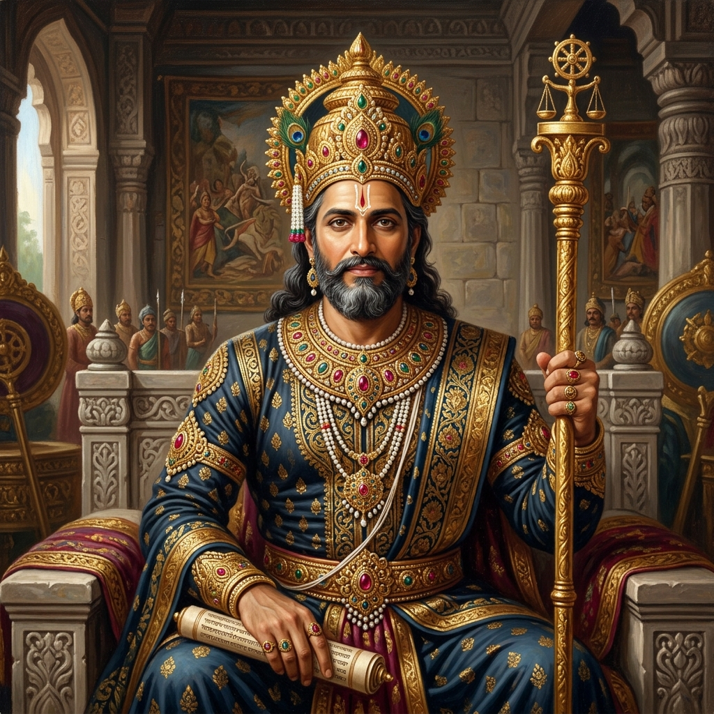
Pandava King • धर्मराज 07Yudhishthira
The Embodiment of Dharma • DharmarajaThe eldest Pandava whose commitment to truth was tested by devastating dice, forest exile, and the tragic calculus of total war.
Sacred LineageEldest Pandava, born to Queen Kunti from Yama / Dharma (God of Justice & Truth); rightful sovereign of Indraprastha.
Divine ArsenalMastery of the celestial spear, unwavering moral fortitude, and supreme understanding of statecraft and spiritual duty.
Kurukshetra Turning PointSupreme commander of the Pandava coalition; spoke the pivotal elephant stratagem to disarm Drona; slew King Shalya; crowned Emperor.
\n\n
-
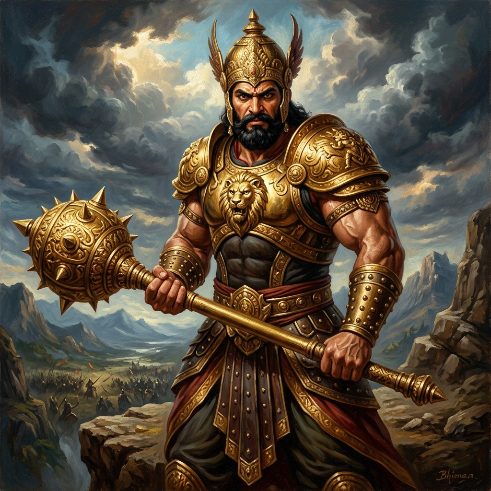
Pandava • वृकोदर 08Bhima
The Colossus of Strength • VrikodaraA mountain of flesh and fury blessed with the strength of 10,000 elephants, living only to defend his family and avenge the dishonor of Draupadi.
Sacred LineageSecond Pandava, born to Queen Kunti from Vayu (the Wind God); gifted supernatural physical power in the serpent realm Nagaloka.
Divine ArsenalThe colossal iron mace, devastating bare-handed wrestling, and irresistible physical momentum that shattered elephant legions.
Kurukshetra Turning PointFulfilled every oath taken in the dice hall: personally slew all 100 Kaurava brothers, tore open Dushasana, and shattered Duryodhana's thighs.
\n\n
-
 Prodigy • वीर अभिमन्यु
09
Prodigy • वीर अभिमन्यु
09
Abhimanyu
Hero of the Labyrinth • Veera AbhimanyuSixteen-year-old warrior prodigy who breached the impenetrable Chakravyuha alone, fighting six Maharathis simultaneously with a broken chariot wheel.
Sacred LineageSon of Arjuna and Subhadra (Krishna's sister); reincarnation of Varchas; learned the entrance to the Chakravyuha in his mother's womb.
Divine ArsenalBowmanship rivaling his father, lightning chariot maneuvers, celestial astras, and the legendary broken chariot wheel.
Kurukshetra Turning PointBreached the 7-tier formation on Day 13; defeated Duryodhana's son Lakshmana; martyred in an unjust encirclement; his son Parikshit saved the dynasty.
\n\n
-
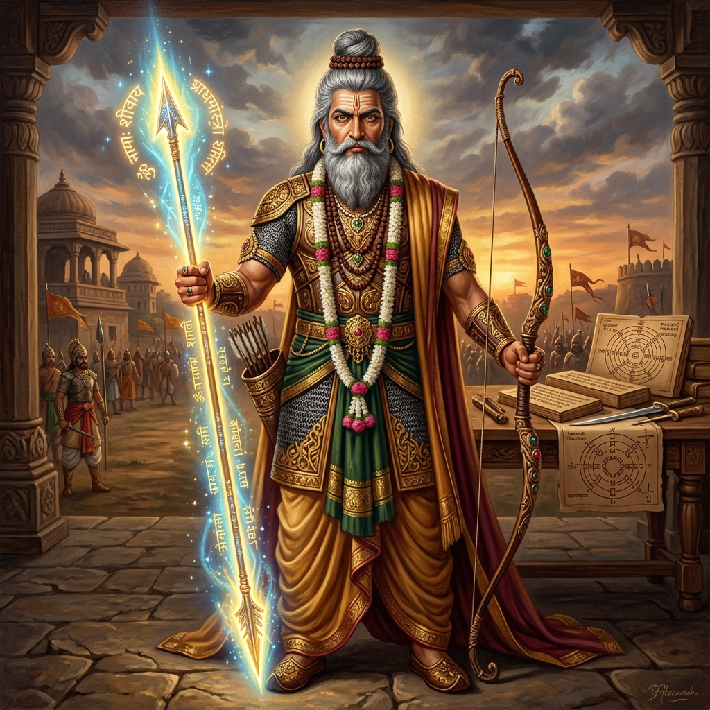
Royal Preceptor • द्रोणाचार्य 10Dronacharya
The Royal Preceptor • Master of AstrasThe revered martial master of both dynasties, caught between lifelong obligation to Hastinapur's throne and affection for his Pandava students.
Sacred LineageBorn miraculously from a clay vessel (Drona) through Sage Bharadwaja; educated by Sage Agnivesha; royal preceptor to the Kuru princes.
Divine ArsenalMaster of all known divine astras including the Brahmashira, and the greatest battlefield architect of geometric formations.
Kurukshetra Turning PointKaurava Commander on Days 11–15; designed the impenetrable Chakravyuha; laid down his celestial arms upon hearing of his son's fall.
\n\n
-
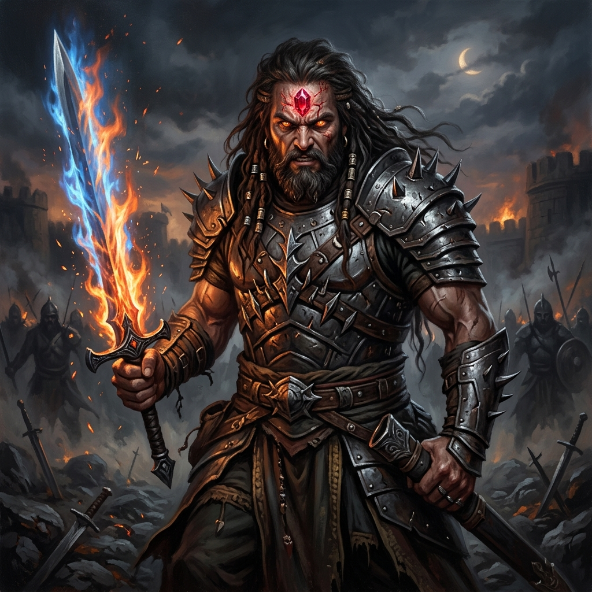
Chiranjivi • अश्वत्थामा 11Ashwatthama
The Immortal Avenger • ChiranjiviBorn with a divine gem in his forehead and the wrath of Rudra in his veins, he became the instrument of the war's darkest vengeance.
Sacred LineageSon of Guru Drona and Kripi; partial avatar of Lord Rudra (Shiva); born with a protective gem embedded in his brow.
Divine ArsenalThe apocalyptic Brahmashira and Narayana astras; immortal resilience granted by Lord Shiva.
Kurukshetra Turning PointFinal Kaurava commander; executed the devastating midnight strike on the sleeping Pandava camp on the 18th night; cursed by Krishna to wander earth for 3,000 years.
\n\n
-
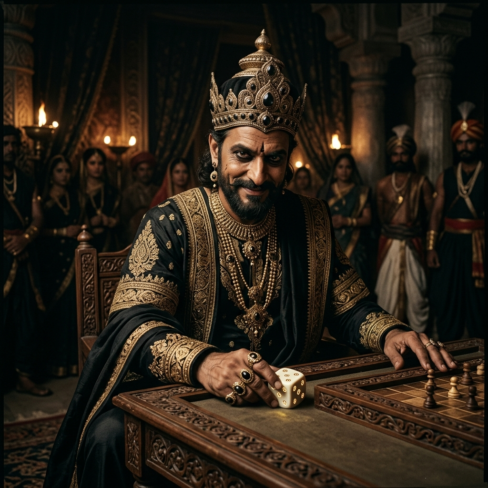
Gandhara King • सौबल 12Shakuni
The Mastermind of Gandhara • SaubalaThe limping prince of Gandhara who turned a pair of ivory dice into weapons more devastating than any celestial astra to destroy the Kuru house.
Sacred LineageKing of Gandhara, brother of Queen Gandhari, and maternal uncle to Duryodhana and the Kauravas.
Divine ArsenalEnchanted loaded dice carved from his father's bones, psychological manipulation, and master political deception.
Kurukshetra Turning PointArchitect of the rigged dice hall humiliation and 13-year forest exile; masterminded the anti-Pandava conspiracies; slain by Sahadeva on Day 18.
The Dice Game
Invited to a game he could not refuse, Yudhishthira wagers his brothers, his wealth, and finally himself — and loses everything, throw after throw.
Dragged before the court, Draupadi is offered no protection by law or kin. What happens in that hall will not be forgotten — not by her, not by the Pandavas, not by the throne itself.
Exile
For thirteen years, the Pandavas live as strangers to their own kingdom — first in the forest, then in disguise, waiting.
Draupadi's vow does not fade with the seasons. Neither does Duryodhana's refusal to share even five villages.
The Road to War
Krishna carries one last offer of peace to Hastinapura. Duryodhana will not yield — not even a needlepoint of land.
Both sides muster their armies. What began as a family's quarrel now belongs to a battlefield.
Kurukshetra
Eighteen days.
Teachers against students.
Brothers against brothers.
The Kuru field remembers every name.
Dharma itself goes to war.
The field is yours to command
Take Your Place in Kurukshetra
Enter the legendary war: break through the rotating concentric death-labyrinth as Abhimanyu in the real-time action roguelite, or command the Pandava champions on the tactical board.
Before the first arrow flies, Arjuna's bow falls from his hands.
Do what is right, Arjuna — not for what it will win you, but because it is right.
The body dies. What is eternal in you does not.
Aftermath
The war ends. Few are left to claim victory.
What remains is not triumph, but the weight of what was lost — and the freedom, finally, to choose peace.
Mahabharat 2.0 — an interactive retelling, built with GSAP & Locomotive Scroll.